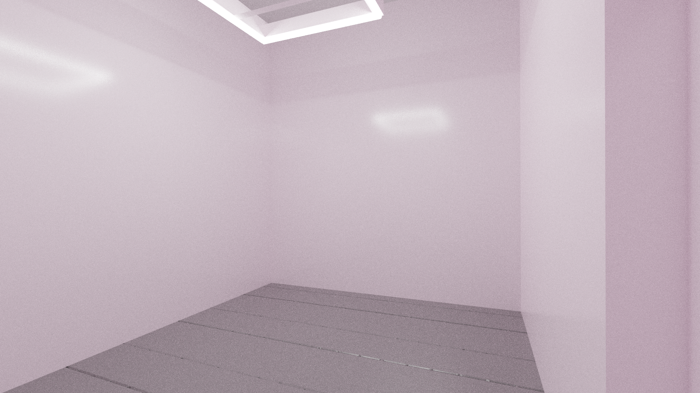
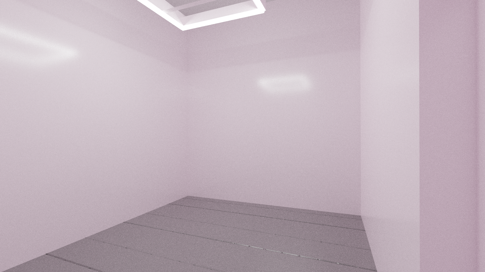

Current buildout situation, 9/10/22: still installing the lighting fixture, which will be (4) 4-foot, 4000K LED fluorescents about 10' off the ground -- and fixing the walls for seam cracking. Their look right now is sort of like excavated plaster and trash against gallery white, actually it kind of looks amazing, so if you are interested in doing a show with a sort of decaying backdrop, it's an option.
Let me know if it would be helpful to have photos sooner rather than later, I've just been holding off until the lighting is accurate.
 
